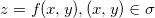
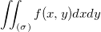
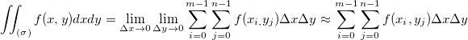
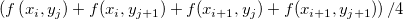
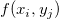

Inhalt |
Diese Funktion berechnet das Volumen zwischen der Ebene Z=0 und der Matrixoberfläche mit Hilfe der zweidimensionalen Integration. Zweidimensionale Volumenintegration kann für ein Matrixfenster oder eine Zeichnung der Matrixdaten durchgeführt werden.
Um diese Funktion zu verwenden:
| Eingabematrix |
Die operierende Matrix |
|---|---|
| Interpolieren nach dem fehlenden Wert |
Fehlende Werte kürzen, falls dieser Parameter wahr ist. |
Diese Funktion berechnet das Volumen unter der Matrixoberfläche mit Hilfe einer numerischen Integralmethode.
Für eine kontinuierliche Oberfläche  kann das Volumen darunter berechnet werden als:
,
Mit Hilfe einer numerischen Methode kann Folgendes geschrieben werden:

wobei M, N jeweils die Anzahl der Zeilen und Spalten in der Matrix sind. Im eigentlichen Berechnungsprozess wird

anstatt von  verwendet.